An hourly production record for the pouring station, kept by the operators on
the phones they already carry. This document is written for whoever decides whether the plant
runs it: what it holds, what it answers, what it costs the floor, and what else it could do.
Part One is what runs today. Part Two is what the same record can be asked to do, each of which
is a setting rather than a requirement. The floor has its own document — a separate
operator guide covering a shift start to finish — so nothing here is written for an
operator to follow.
ReleaseVersion 3.27
PlatformStreamlit · PostgreSQL
ScopeResin Pouring
IssuedSeptember 2026
Contents
What is in this handbook
Part One is the system as it runs: one screen an operator uses, and everything read back out of what they enter. Nothing in it requires an entry from anyone but the operator. Part Two is what the same record supports if it is wanted, each one a setting that is switched off until somebody switches it on.
Part One — in service
01What it recordsWhat the record holds, and what it asks of anyone3
02How it fits togetherOne database, and every screen a window onto it5
03The operator terminalThe one screen an operator uses6
04Lot traceabilityWhich lot went into which containers7
05What comes out of itScrap, trends and getting the record out8
06The floor as it is nowThe live view of the floor as it stands11
07Who can do whatRoles, and what each one can reach12
08Running itBackups, accounts, and keeping the record honest13
09Vessel levels and the floor displayWhat is left in each vessel, and the wall display15
Part Two — available if wanted
10Assigning work to stationsDispatching runs to stations and tracking them17
11Fill weight and giveawayRecording what a container actually weighed18
Appendices
AGuide — ManagerWorking guides for the manager and the administrator20
BReading the screen on the floorGloves, lighting, contrast and colour on the floor23
CHow it is testedWhat is checked before a release, and what that has caught24
DBuilt, not in serviceBuilt, not in use, and not proposed25
Who this is for, and how to read it
Management. The working guides in Appendix A are the manager's and the administrator's; the
floor has its own document, the Resin Pouring Operator Guide, written to be read at
the pump.
It covers more ground than the plant needs today, and the marker on
each section says which is which: In service runs now; Optional is finished and
switched off until somebody wants it; Not in service was built to find out whether an
approach works, with nothing depending on it. Part One is what is being proposed —
the rest is here so the capability is known, not because it is being asked for.
Resin Pouring Production Logging · Operations Handbook2
Part One — In service
01 / What it recordsIn service
A production record for resin pouring
Resin pouring has never had a production tracking system. Counts, downtime,
changeovers and cartridge lots lived on paper and in people's heads, which means the plant has been
running without a record it could query, an hourly pace it could see, or any way to answer a
quality question after the fact.
This is that record. A web application opened in a browser — on an
operator's phone at the pump, on a desk in the office, and on the floor display — backed by a
PostgreSQL database. Operators log the hour as it happens, at the pump. That log is the whole
input: the figures on the wall display, in the analytics charts and in the exports
are not separate reports, they are the same rows read different ways.
Nothing here asks a manager to enter anything, and nothing asks the plant
to find somebody to administer it: as a logging system a manager holds the console too, so a PIN reset
or a new pump does not wait on a second person. The system installs with work orders switched off — a plant that wants to dispatch runs to stations and track
them against a target turns that on, and the screens for it appear; a plant that does not is a
log, and the operator terminal never mentions runs at all. Everything in Part Two of this
handbook works the same way: a setting, answering a question somebody asked
first, not a step in getting the record.
1screen an operator uses, on the phone already in their pocket
0entries required from a manager for the record to be kept
3roles, each seeing only what its job needs
2shifts, a plant setting rather than an assumption in the code
18database tables of production, quality and configuration
1,420automated checks run before a release, including a browser driven through a shift
What it records
Every unit poured, attached to an operator, a station, a resin, a lot number and a timestamp.
A lot check against each pouring log — every container format — including the ones that failed.
Downtime by reason and duration, and scrap split between empty and filled containers.
Start-of-shift, changeover and spill photo audits, filed against the station.
Pre-shift validation per operator, per shift, per pump station.
Reactor volume, reconciled against what has been logged rather than overwritten.
Scope
The system is in service for resin pouring. Pack-out logging and machine integration are built
but not in use; both are described in Appendix D rather than here, because neither has been
committed to.
Resin Pouring Production Logging · Operations Handbook3
01 / What it recordsIn service
Questions that had no answer before
A record is only worth keeping if somebody can ask it something. These are the
questions resin pouring could not answer, and what answers them now. None of them needs an
entry from anybody but the operator at the pump.
Quality
Which containers came out of this lot?
Every pouring log carries the lot number the operator read off the container in front of
them, checked against what was expected, with the operator, the station and the time on it
— including the checks that failed. A complaint six weeks old becomes a query rather
than a reconstruction.
Output
What did we pour, and when?
Hourly, by operator, station, resin and container format, from the day it was switched on.
Exportable for anybody who needs the numbers somewhere else, in the shape they are already
kept.
Lost time
Where did the hours go?
Downtime logged against a reason and a duration while it is happening rather than
remembered afterwards, and scrap split between empty and filled containers. Both ranked, so
the biggest one is visible instead of the loudest one.
Pace
How is the shift running, right now?
The floor display shows the team its own rate against the expected figure while there is
still time to do something about it — built from the same hourly entries and nothing
else.
Stock
How much is left in that vessel?
Worked out from what has been poured out of it since it was last filled. Nobody dips a
tank and nobody keys a number in for this to be right.
Discipline
Is the lot check actually being done?
Full checks against confirmation taps, per operator and per station. A station showing
almost no full checks is taking the fast path every hour, and that shows.
What it costs the floor to get this
One screen, on the phone the operator already carries, filled in once an hour — no new
hardware, no scanner, no terminal to buy. And nothing entered by anybody upstream: a
manager who never opens it still gets the whole record, because the record is the operator's
log and there is no second copy of it anywhere.
Resin Pouring Production Logging · Operations Handbook4
02 / How it fits togetherIn service
One database, many windows
Nothing on the floor keeps its own copy of the numbers.
Schema changes
Structural changes ship as
numbered migrations that apply themselves on start-up, rather than SQL run by hand. Logs carry
foreign keys to the operator and station as well as the legacy name text, so renaming someone
does not split their history.
Where the logic lives
Business logic sits in
one module the whole application shares. Every screen that shows a figure reads it through the
same functions, so a change to how yield is calculated applies everywhere at once.
What happens when an operator submits a log
1
Checked at the station
The lot on the
container is compared against the run before the form accepts the entry.
2
One transaction
The log and its verification
record are written together; neither can exist without the other.
3
The run re-counts
Progress is recomputed from
the logs matching its station, resin, format and lot.
4
Everything else follows
Display, analytics
and exports all read those same rows.
Resin Pouring Production Logging · Operations Handbook5
03 / The operator terminalIn service
The operator terminal
One screen, sized for a gloved thumb on a phone: stacked
inputs, large targets, no navigation to get lost in. Operators open it on their own
handsets rather than at a shared terminal.
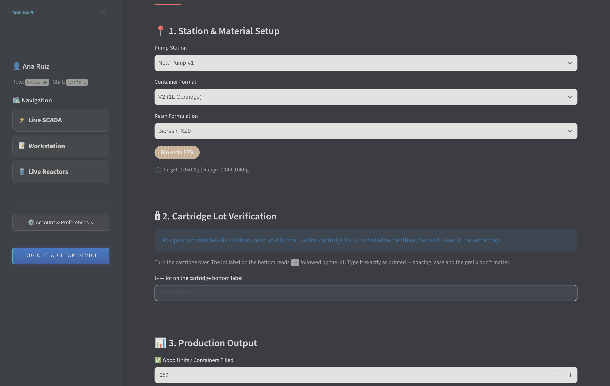
The hourly log. Station and material, the lot read off the container, then the
counts. This is the screen in full — there is nothing above it and nothing after the submit
button.
Tab 1
Log hourly pouring
Station, container format, resin, verified lot, good units and both scrap categories, with the
target fill weight and tolerance for the selected resin shown alongside.
Tab 2
Log station downtime
Reason from the plant's configurable list, duration and notes. Feeds the downtime ranking used
in analytics.
Tab 3
Cleanliness & photo audit
Start of shift, end of shift, line transfer or spill, with a camera capture or upload, filed
against the station.
Tab 4
Manager comms
A direct message thread with the plant lead, inside the terminal.
Always visible
Units poured, scrap and quality yield for that operator sit at the top of the screen and update as
they log. It is the same figure management sees; there is no separate scoring.
Resin Pouring Production Logging · Operations Handbook6
04 / Lot traceabilityIn service
Lot verification
Lot labels get mixed up at the pumps: a pallet of
pre-labelled empties is staged that belongs to a different lot, and resin goes into it. An earlier build
of this form auto-filled the run's lot and printed it on screen, which meant an hour could be logged
without a cartridge ever being turned over — the check was answering its own question.
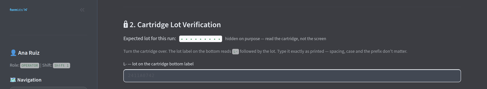
The check. The lot the run expects is masked. The operator turns the container
over and types the L- code from the lot label on its bottom. Spacing, case
and the prefix are normalised, so a code typed verbatim matches a run lot entered
bare.
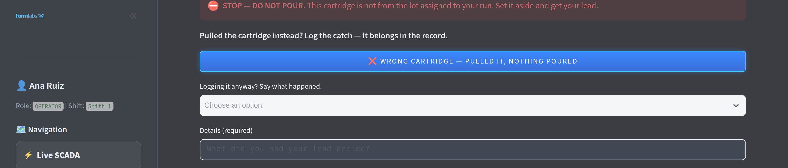
When it doesn't match. Submission is refused until the cartridge is pulled —
recorded as a catch, with no production logged — or a cause, details and a photograph of the
label are supplied. The log then saves flagged, carrying the lot physically in the container.
Frequency
Full check, then a confirm
The full check runs on the first log of a shift, on any change of run, lot, resin or station,
after four hours, and on every tenth log. Otherwise a single confirmation tap.
Cost
Photo only on a mismatch
A clean check is one field and one tap. The photograph is required only when logging against a
flag — and deliberately not required to pull a cartridge, so the safe action is never the
slower one.
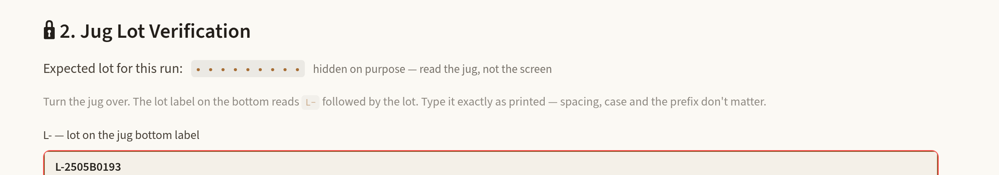
The same check on a bulk jug. RPS was the one exempt format, on the understanding
that jugs carried nothing to read. They carry the same lot label a cartridge does, in the same place
— so it is the same check, and only the noun changes with the format picked above.
Design note
A mismatch does not stop the line; it asks for an explanation, because a control that halts
production is one people learn to work around. Every flag and every pulled container reaches
the manager's review page.
Resin Pouring Production Logging · Operations Handbook7
05 / What comes out of itIn service
Review and scrap intelligence
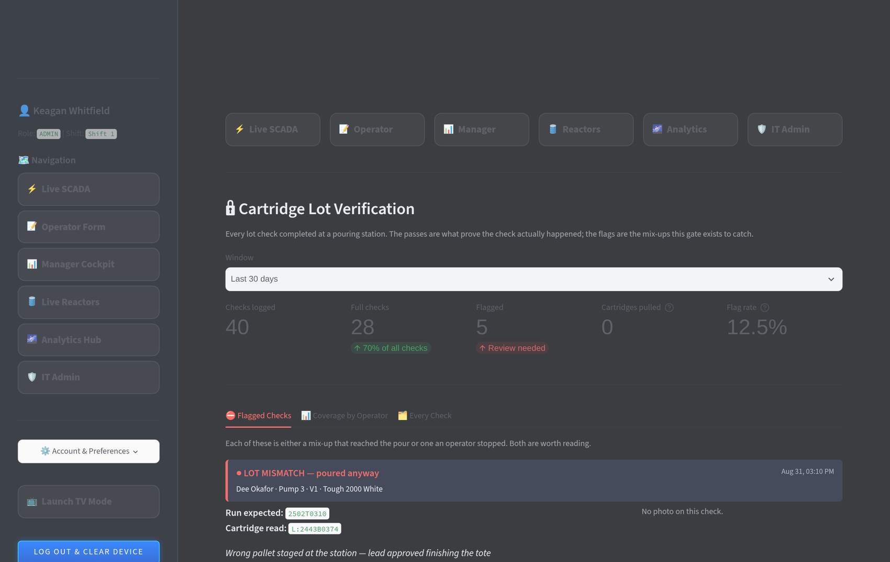
Lot Verification review. Every check completed, pass or fail. The passes record that
the check happened; the flags are the mix-ups. Coverage per operator shows who is completing full
checks and who is using the confirmation tap.
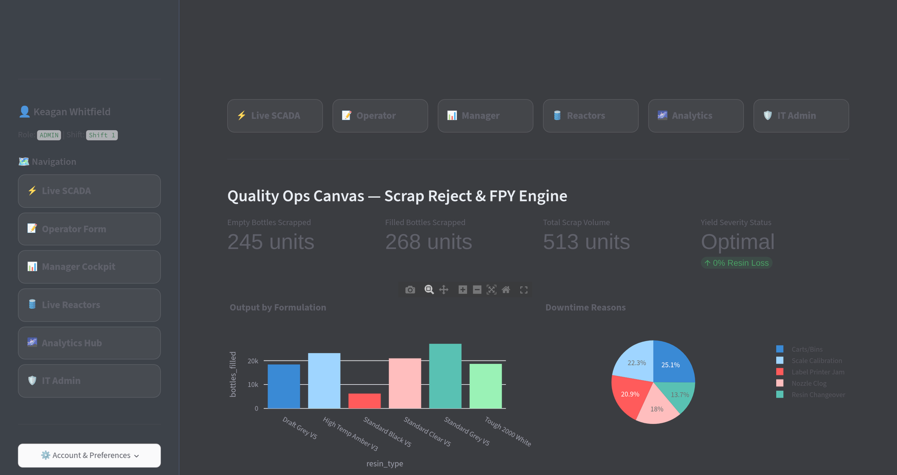
Scrap & Yield Intelligence. First-pass yield against the configured target, with
scrap split between empty and filled containers — a handling problem and a lost-resin problem
respectively — and downtime reasons ranked alongside.
Photo audits
Cleanliness gallery
Start of shift, end of shift, line transfer and spill audits with photograph, station, operator
and timestamp. Spills are counted separately.
Export
CSV from the register
The verification register exports directly, so a quality question or customer audit can be
answered without a database query.
Resin Pouring Production Logging · Operations Handbook8
05 / What comes out of itIn service
Trends
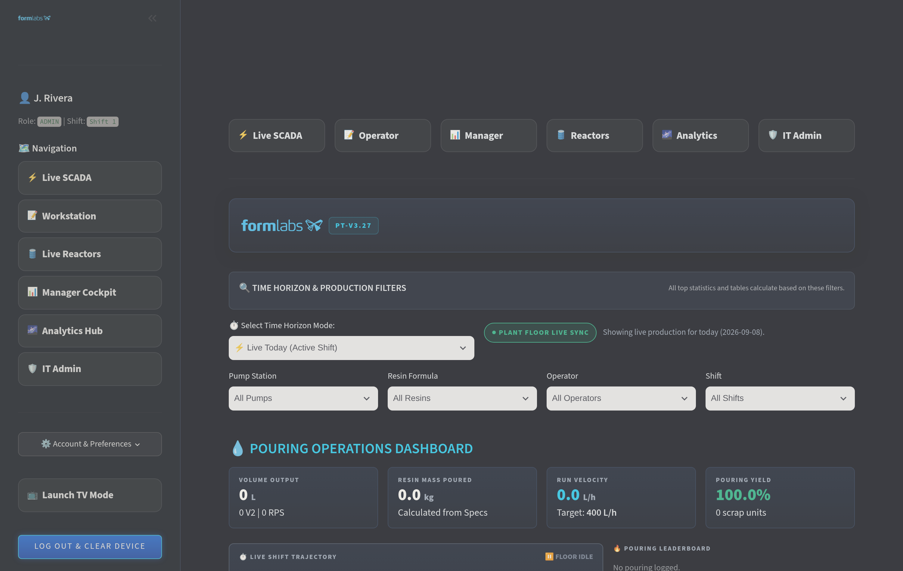
Analytics Hub. Output trend over the selected horizon, share of production by resin
formulation, and downtime ranked by reason.Historical Production Trends. The same data filtered by horizon, resin and individual
operator, for month-to-date, year-to-date or any range.
Resin Pouring Production Logging · Operations Handbook9
05 / What comes out of itIn service
Reporting out
Getting the record out of the application, for somebody
who is not going to open it. Both routes are manual and on demand: nothing is scheduled, nothing is
emailed, and nothing leaves the plant unless a person asks it to.
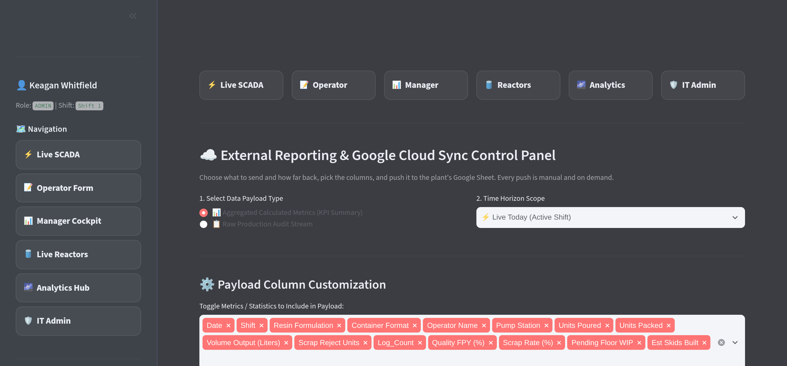
External reporting. Pick the payload — an aggregated summary or the raw
audit stream — the time horizon and the columns, then push. Internal-only fields are stripped
before anything leaves the app.
Cloud export
Google Sheets sync
For the people who work in a spreadsheet and are not going to stop. The sheet is a copy, not a
second system: it is written from the same rows and never read back. Each manager links their own
spreadsheet rather than sharing one the installer set up, and a sheet stays private unless its
owner shares it.
Self-service
Excel or CSV, straight down
The same rows as a file — no account, nothing to publish, nobody’s permission to ask
for — opening straight into Sheets or Excel. This is the route that cannot fail: a company
Google account usually sits under a policy forbidding the kind of connection a live sync needs, and
no amount of correct setup gets past it. Filtered log views and the verification register export
directly too, so finance, quality or an audit can be answered without a developer.
Removed, and worth saying why
There was a shift handover here: four whole-day figures rendered as a PDF and emailed to a
distribution list. Every one of them is on the landing screen, broken down by station, operator, resin
and shift — which the report was not, since it filtered by date rather than by shift. The lead
who arrives before the shift and opens the app was always going to see more than it could tell them,
and it was the only feature in the application that needed an outside credential to work at all.
Resin Pouring Production Logging · Operations Handbook10
06 / The floor as it is nowIn service
The floor as it is now
The landing screen for every role. Filters across time
horizon, station, resin, operator and shift recalculate every figure on the page.
Live SCADA. Volume output, resin mass poured (calculated from each formulation's
master fill weight), run velocity against the configured target, and pouring yield.
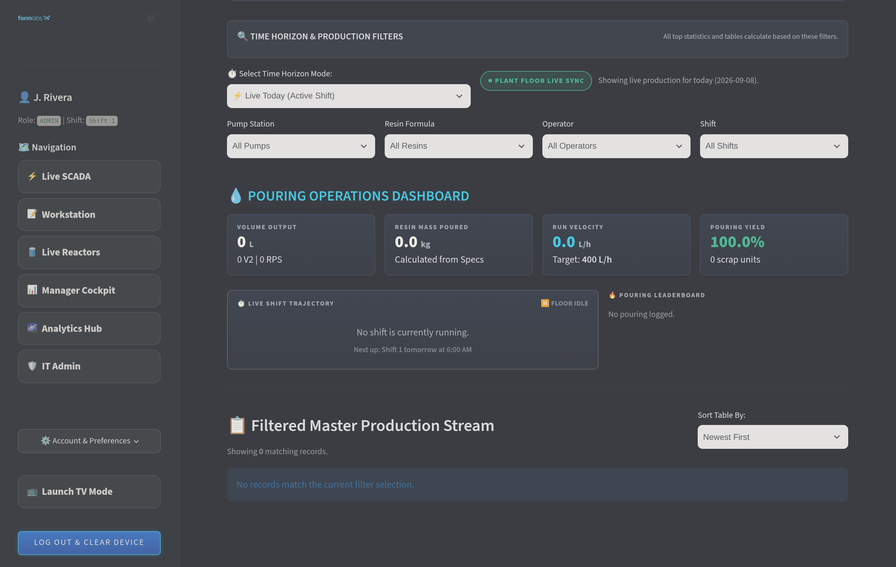
Below the fold. Shift trajectory against pace, a pouring leaderboard, and the
filtered production stream — the individual logs behind the figures above.
Resin Pouring Production Logging · Operations Handbook11
07 / Who can do whatIn service
Roles
Everyone signs into the same application and sees a
different one. Access is checked on every page, so the difference is enforced rather than cosmetic.
The column that moves is Manager. A plant running this as a
logging system has no separate IT role — there is nobody to be it — so a manager is the
administrator: accounts and PIN resets, equipment, plant settings, backups and cleanup. Switch to an
execution system and those hand back to administrator accounts, which is what the shaded rows below
mean.
Capability
Operator
Manager
Admin
Live SCADA dashboard
Yes
Yes
Yes
Startup checklist & terminal unlock
Required
n/a
n/a
Log hourly pouring & lot verification
Yes
Test mode
Test mode
Log downtime & cleanliness audits
Yes
Yes
Yes
Message the plant lead
Yes
Both ways
Both ways
Live reactor fleet & reconciliation
Yes
Yes
Yes
See the lot a run expects
Masked
Yes
Yes
Create & dispatch work orders
—
Yes
Yes
Analytics hub & historical trends
—
Yes
Yes
Lot verification review & scrap intelligence
—
Yes
Yes
Google Sheets sync & CSV export
—
Yes
Yes
Floor roster & PIN resets
—
Floor staff
All users
Master resin specifications
—
Yes
Yes
Log management & bulk cleanup
—
Yes
Yes
Plant configuration, shift count & parameters
—
Logging mode
Yes
Record a check weight against an hourly log
Optional
Optional
Optional
Undo your own last log, within two minutes
Own only
Own only
Own only
Database backup & restore
—
Logging mode
Yes
Provision accounts & reset any PIN
—
Logging mode
Yes
Choose how the plant runs this system
—
Logging mode
Yes
Logging mode marks the rows a
manager holds only while the plant runs as a log. Test mode lets a manager or administrator
log on behalf of an operator for training and troubleshooting; the entry is attributed to the operator
selected and is visible in the log.
One thing the mode cannot do is strand a
plant: an execution system restricts this console to administrator accounts, so the switch is refused
while no such account exists, rather than locking everybody out of the screen that would switch it
back.
Resin Pouring Production Logging · Operations Handbook12
08 / Running itIn service
Running the system
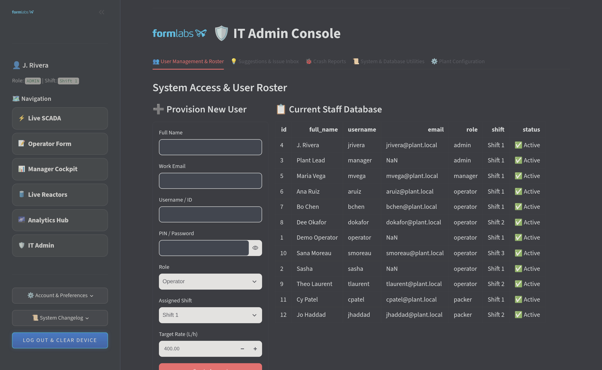
IT Administration. Roster, the issue inbox, database utilities and global plant
configuration.
People
Accounts and roles
Provision staff, assign role and shift, set per-operator rate targets, reset PINs and unlock
accounts. Managers can provision floor personnel without full IT access.
Plant
Global parameters
How many shifts the plant runs — this one runs two — with start
times, lengths and breaks; rate and yield targets; and the address of
the pump form the operator terminal links out to.
Equipment
Stations, reactors, reasons
Pump stations, the reactor fleet and capacities, and the downtime reason list, so the vocabulary
stays the plant's own.
Recovery
Backup and restore
A full snapshot is taken automatically once the newest one is a day old, the last fortnight
is kept, and IT Admin says in one line how old the newest is — so a backup that has
quietly stopped is visible rather than assumed. Each one records what the database held when
it was taken, and a restore onto another machine is checked against that row by row
before anybody is invited to start using it.
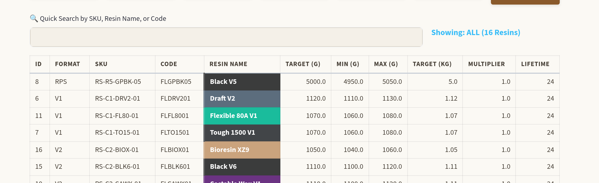
Master Resin Specifications. Target fill weight, tolerance band and shelf life
— what every check weight is judged against, and what turns a bottle count into resin mass.
Each formulation carries its colour from the plant's own master sheet.
Resin Pouring Production Logging · Operations Handbook13
08 / Running itIn service
Access control and data integrity
Accounts
PINs are hashed. Salted with bcrypt; the database holds no readable PIN, including for administrators.
Lockout. Five failed attempts locks the account for fifteen minutes, with an instant IT unlock.
Sessions are tokens. A signed token with a fixed lifetime backs "remember this device", revocable server-side.
Every page checks the role. Enforced on the page itself, so typing a URL for a screen your role lacks returns access denied.
Output is escaped. Values typed on the floor are escaped before rendering, so a note cannot inject markup or break its own card.
The record
History survives a rename. Logs carry foreign keys to the person and station as well as the name text.
Deletions re-sync. Removing a log recalculates whatever work order it counted toward.
Bulk deletion is deliberately hard. Disabled until the word DELETE is typed into a confirmation box.
Corrections are visible. A plant-level correction is written as a labelled system adjustment, not by editing an operator's entries.
Credentials are kept out of the application itself. Connection strings and passwords live in a configuration file on the machine, not written into the program.
A page that breaks is recorded. Whoever was on it gets a short reference code to quote, and the fault is filed in IT Admin with the page, the account and the detail.
Log Management & Cleanup. Filter production and downtime logs by date, station,
resin or operator, review, and delete with the work-order re-sync handled automatically.
When nothing is arriving at all
The failure worth planning for is not corruption, it is silence. If this machine reboots
and the database does not come back, every figure on every screen carries on looking normal,
because every figure is computed from the log and the last good hour is still the last good
hour. So the system watches its own intake: after roughly three hours with nothing logged
during a running shift, the main screen and the floor display both say so. Quiet
outside a shift is not a fault, and nor is a day the plant does not run — the working
days are set in the admin console, and a shift counts by the day it starts.
Resin Pouring Production Logging · Operations Handbook14
09 / Vessel levels and the floor displayIn service
Vessel levels and the floor display
How much is left in each supply vessel, worked out from the same hourly logs
as everything else — and the same figures on a wall screen the floor can read without
opening anything.
A vessel's level is not a number anybody types in and it is not read off an instrument. It is
the vessel's capacity less what the record says has been drawn from it since it was last filled,
and both halves of that come from the hourly log the operator is already filling in. Each log
carries the lot number the operator read off the container, so a new lot at that station is the
vessel having been refilled; and each log carries the container format it was poured in, so a
bulk jug and a cartridge are counted at their own volumes rather than one assumed for all.
Nothing has to be entered anywhere else for the levels to be right.
Not everything leaving a vessel is a counted container. An amount decanted into a drum or a
tote is entered as the amount — in litres or in kilograms — and converted using the
density already implied by the resin’s own fill-weight spec, so no new figure has to be
looked after. An amount larger than the vessel could have given out is refused at the keyboard,
because a typed volume is not self-checking the way a container count is: nobody types 2,500
cartridges and believes it, but 1800 litres instead of 180 looks perfectly ordinary and only
shows up an hour later as an empty vessel on the wall.
The consequence worth stating plainly: the level does not depend on work orders. It reads
identically whether or not the plant is dispatching runs.
When a gauge disagrees with the calculated figure — a transfer nobody logged, a partial
fill — anyone at the vessel can correct it from the operator terminal, either by the
percentage on the sight glass or by the exact litres. The correction is written into the record
as a dated, attributed adjustment rather than quietly replacing what was there, so the
disagreement stays visible and the level goes on being derived from the record afterwards.
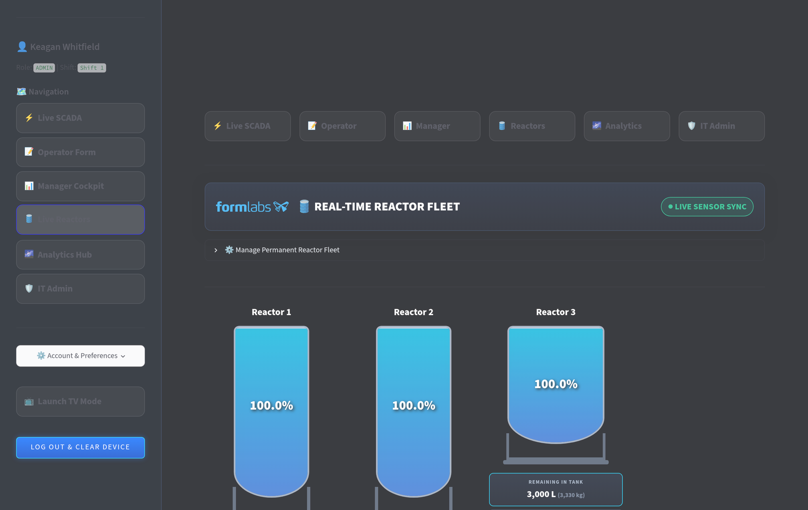
Live Reactor Fleet. Each vessel drawn as its own kind, with its asset tag,
bay marker, resin, station, lot and remaining volume in litres and in kilograms.
When a vessel sits at empty
A vessel that reads empty while pouring continues from it is telling you something specific:
more has been drawn on the current lot than the vessel holds, which means it was refilled and
the lot on the log did not change with it — the same drum number read off a second
container, or a top-up nobody recorded. The figure is not lost, and nothing needs unpicking:
the next lot that does change resets the vessel, and a level calibration corrects it in the
meantime. It is worth knowing because it is the one condition where the screen and the vessel
can disagree without anybody having made a mistake at the pump.
Resin Pouring Production Logging · Operations Handbook15
09 / Vessel levels and the floor displayIn service
Reading a vessel off the screen
The picture is drawn to be checked against the vessel it describes, because a
screen that can be checked at a glance gets checked.
Each vessel is drawn as the kind of thing it physically is — a tall bulk reactor, a
squat cone mixer, a caged tote — because on this floor those are three different objects
and their capacities do not tell them apart. Every fabricated vessel here has a cone bottom in a
steel frame; only the totes are flat, and what separates the two fabricated ones is their
proportions and whether litres are painted on them. Each carries its stencilled asset tag and the
orange bay marker from the bollard beside it, so the vessel on the screen and the vessel in the
aisle have the same name. And where the real vessel has litre graduations, the drawing has them
too, with the surface landing on the mark somebody standing there would read it against: a
vessel showing 2,193 L sits just above its 2,000 line, on the screen and in the aisle.
The liquid is drawn in the resin's own colour, on the same reasoning as the coloured labels
everywhere else — from across a room, colour is what identifies a formulation, and this
wall of vessels is meant to be read from across a room. A vessel with nothing assigned to it
reads IDLE rather than nought percent, which is a different statement and the true one.
The three kinds, and what a manager sets
Tall bulk reactor
Tall and narrow
Bolted top flange, cone bottom in a steel frame, and litre marks painted up the barrel.
Drawn with its scale.
Squat cone mixer
Short and wide
The same construction in different proportions, with ribs down the cone. Drawn without a
scale, because the real one has none.
IBC tote
Caged bottle on a pallet
Not a fabricated vessel, and the only flat-bottomed one. Moulded cage, pallet feet, ball
valve at the front. Around 1,000 L.
Each vessel carries three optional settings under Manage
Permanent Reactor Fleet: which of the three it is, its asset tag, and its bay marker. The
kind starts from the capacity, which is right for most of a fleet and wrong for the interesting
ones — so it is a starting point a manager corrects, not a rule the drawing keeps
re-deriving.
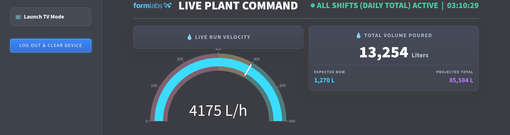
Floor display mode. The same record on a wall screen — the active
shift, or the whole plant day, refreshing itself.
Resin Pouring Production Logging · Operations Handbook16
Part Two — Available if wanted
10 / Assigning work to stationsOptional
Work orders
Off unless a plant turns it on, and the operator
terminal in Part One is complete without it. This page is what becomes available if somebody
wants work dispatched to stations and tracked against a target.
A manager creates a work order against a reactor, resin,
container format and lot. Hourly logs submitted at that station are matched to it automatically,
and the lot check gains something to compare against instead of only recording what was read.
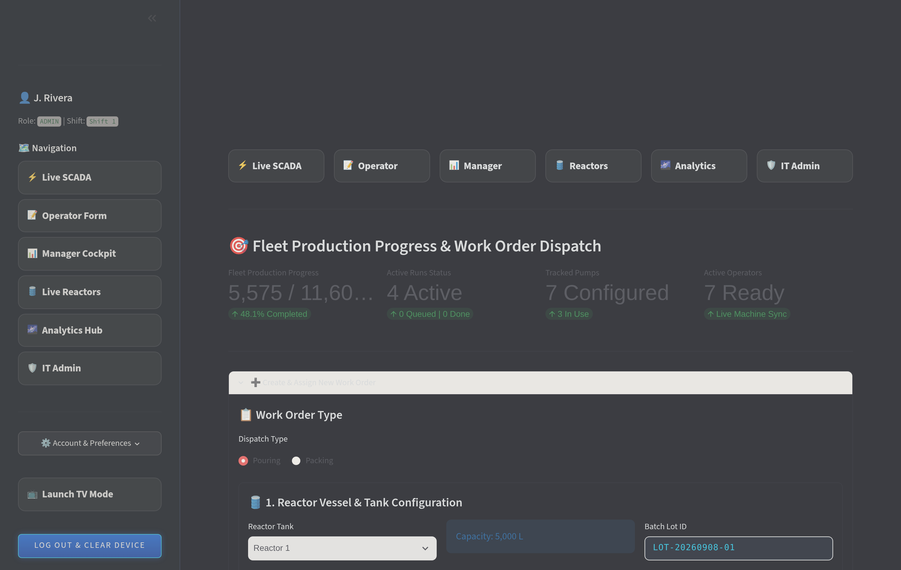
Work Orders & Assigned Runs. Fleet-wide progress across active runs, with status,
assigned operator, pump station and lot. Completed orders move to a separate history tab.
Dispatch
Create and assign
Reactor, size, resin, container format, target units, station and lot number, dispatched to a
station rather than to one named person.
Counting
Progress from logs
A run's count is recomputed from the production logs that match it, so deleting a bad entry
re-syncs the order instead of leaving it overstated.
Shared stations
Several operators, one run
Progress follows the pump station, so any number of operators can work the same run without a
duplicate assignment being created for each.
Closeout
Finish on the real number
A run can be completed on a custom final total when the physical count differs, and the reactor
it drew from is released.
Resin Pouring Production Logging · Operations Handbook17
11 / Fill weight and giveawayOptional
Fill weight and giveaway
The system has always known what every cartridge is
supposed to weigh. Until now it never recorded what one actually weighed, so it could say how many
units were poured but not how much resin went into them.
16resin specifications, each with its own target and tolerance window
1optional reading an hour — never mandatory, never pre-filled
4 kggiven away per thousand cartridges by a pump running 4 g heavy
Why a passing check is not the same as a right weight
A pump set up to stay safely clear of the low limit sits above target on every cartridge it
fills. Every one of those passes. Every one carries resin the customer did not pay for. On a 1110 g
target each gram over is about 0.09% of the fill — small on one cartridge, and 4 kg per
thousand at four grams heavy. Four of the sixteen specifications make it worse by being lopsided:
Grey V5 and Clear V5 allow 10 g under target and
only 5 g over, so the safe place to sit is nearer the ceiling. The giveaway does not depend on
that, though — it happens on a symmetric window too. It was invisible because the target was
displayed and never compared against anything.
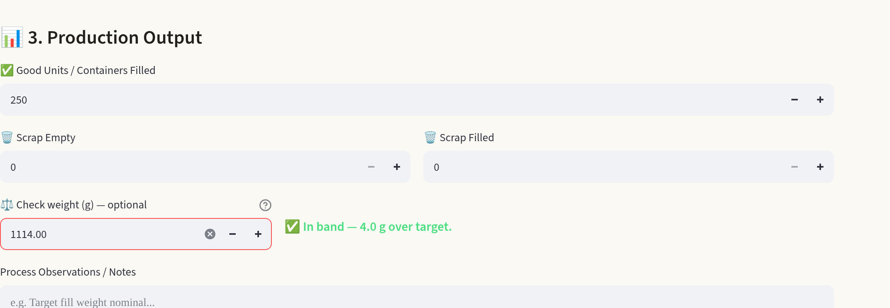
One box on the hourly form. The reading is judged against that resin's own window
as it is typed. Here 1114 g on a 1110 g target is inside spec and four grams heavy —
a cartridge that passes and still gives resin away.
Optional by design
It can never block a log
The lot gate stops the line because a wrong lot is a defect. A heavy cartridge is information.
Make a weight mandatory and within a week it is the target typed from memory on every log —
and a column full of 1110 is worse than an empty one, because it looks
like data. Sparse and honest beats dense and invented.
Never pre-filled
The box starts empty
For the same reason the run card had to stop printing the lot the check was hiding: a field that
already contains the right-looking answer gets accepted, not measured.
Resin Pouring Production Logging · Operations Handbook18
11 / Fill weight and giveawayOptional
What the readings add up to
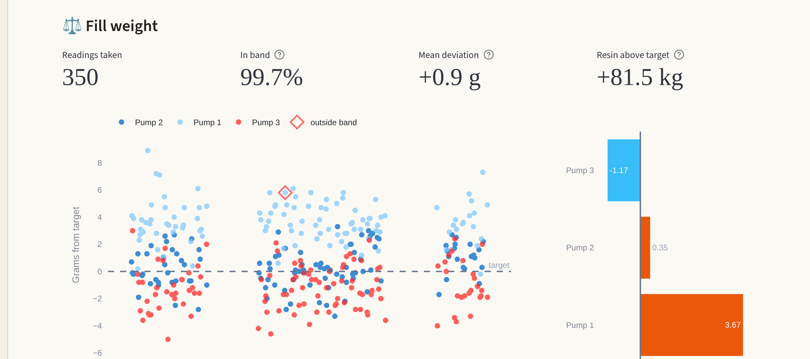
Fill weight, across a fortnight of pouring. Deviation from target rather than
absolute grams, so resins with different targets can share an axis; zero is target and out-of-band
readings carry their own marker. On the right, mean deviation per pump — one running heavy, one
light, one close to nominal. That is the whole argument in one chart: every point above the dashed
line passed its check.
One reading, not three
Between hours, not within a minute
Three cartridges weighed in the same minute mostly measure the scale. The variation worth
catching is hour to hour, so one reading stands as a sample of its hour — and each is weighted
by the units logged beside it, which is what turns “four grams heavy” into
kilograms.
Judged once
The verdict is stored, not recalculated
A reading is compared against the window in force when it was taken, and that verdict is kept.
Editing a specification later changes what happens next; it cannot retrospectively re-judge readings
somebody already took.
One number that has to stay honest
The headline share of readings inside their window never rounds a near-miss up to a clean 100%.
349 of 350 is 99.7%, and printing that as 100% directly above a chart in which the one exception is
plainly visible costs the reader's trust in every other figure on the page — and that one
exception is the reason to look.
Where this leads
The machine-integration gateway described in Appendix D already carries a serial adapter written
for exactly these bench scales. If they have a serial output the weight arrives with no operator
effort at all — and these manual readings are what that automated capture would have to be
validated against, since checking it needs known-good numbers to check against.
Resin Pouring Production Logging · Operations Handbook19
Appendices
Appendix A / Guide — ManagerOptional
Dispatching the day
This page applies only where work orders are switched on. Where they are not, a manager enters nothing at all — the next page, reading the floor and closing the day, is the whole of the role.
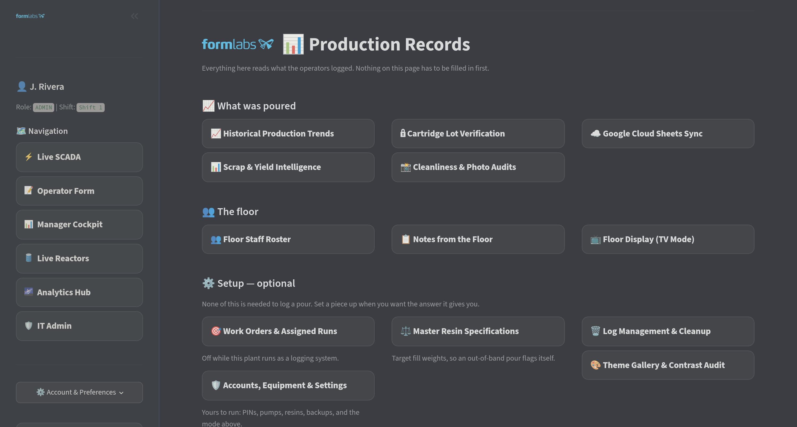
Manager Cockpit. Each management module on its own screen rather than one page trying
to do everything.
1
Create the work orders
Reactor and size, resin, container format, target units, pump station and lot number. Assign an
operator for accountability, but note progress follows the station — anyone working that
pump contributes to the same run.
2
Enter the lot exactly as printed
The most important field on the form: it is what the operator's cartridge check is compared against.
Enter the number as printed after L- on the base. Spacing, case and the prefix
are normalised, but a wrong number cannot be.
3
Watch the fleet, not the logs
The work order page rolls up fleet progress, active and queued counts, tracked pumps and operators
ready. Drill into a run only when its progress stalls.
If a progress bar is not moving
Almost always one of three things: the operator's station does not match the run's, the resin or
container format differs, or the lot on the run does not match what is staged. The verification review
shows which.
Resin Pouring Production Logging · Operations Handbook20
Appendix A / Guide — Manager
Reading the floor, closing the day
Daily
Flagged lot checks
Mismatches poured anyway and cartridges pulled, each with the photograph, both lot numbers and the
operator's reason. A mismatch that is really a formatting difference means the run's lot needs
correcting, not the operator.
Daily
Scrap and downtime
Yield against target, the empty-versus-filled split, and downtime by reason. Empty scrap is a
handling problem; filled scrap is lost resin and considerably more expensive.
Weekly
Verification coverage
Full checks versus confirmation taps per operator. A station showing almost no full checks is one
taking the fast path every hour.
Weekly
Trends
Output trend, share by resin, and per-operator history. The historical page covers anything beyond
the current fortnight.
4
Close out finished runs
Complete a run on its real final count when the physical number differs. The correction is booked as a
labelled system adjustment and the reactor is released.
5
Answer the floor
The communications page holds every operator's thread. A question left unanswered there gets solved
badly on the floor instead.
Resin Pouring Production Logging · Operations Handbook21
Appendix A / Guide — Administrator
Keeping it running
Before trusting a machine with the plant
Check_This_PC.bat answers one question — is this PC ready — and when the
answer is no it prints exactly what to type. It confirms the database is reachable and its
schema current, that the backup tools are present and new enough to read this server,
that there is disk space and a free port, and whether the firewall will let the handsets in.
It takes a real backup while it is there, so backups are known to work rather than assumed.
Then it prints the address to give the phones — the machine's name and its number, with
the name marked, because a number stops working when the machine rejoins the network and every
bookmark made from it dies with it.
In a plant running this as a logging system this page is the
manager's job, not a separate person's — there is no separate IT role to hold it. The work
is the same either way; only who does it changes.
On joining
Provision the account
Create the user with the correct role and shift before their first shift. Role decides which screens
exist for them; shift decides which checklist and pace target apply.
On leaving
Remove access, keep history
Deleting a user removes access. Production history stays attached through the foreign key on every
log.
Weekly
Verify a backup
Take a snapshot and confirm it lands. A backup that has never been restored is a hypothesis; the
restore path is on the same page.
Per release
Let migrations run
Schema changes apply on start-up. After deploying, start the app once and confirm it comes up before
the shift arrives.
Seasonally
Review plant parameters
Shift times, lengths, break minutes, rate and yield targets. Every pace indicator and yield judgement
is measured against these.
Monthly
Clear the suggestions inbox
Staff file requests, bugs and floor issues from inside the app. An inbox nobody empties is one nobody
writes to.
Not this
Do not edit production rows directly in the database to fix a number. Use log management to remove the
bad entry — it re-syncs the affected work order — or a reconciliation to book a variance. Both
leave a visible record; a direct edit leaves the totals right and the story wrong.
Resin Pouring Production Logging · Operations Handbook22
Appendix B / Reading the screen on the floor
Readability where the work happens
A phone held in a gloved hand at arm's length, in a
room lit for pouring resin, is a different reading problem from an office monitor. These are the
settings that address it. All of them are per-user and remembered; none of them changes what is
recorded.
Gloves
Glove mode
Nitrile still registers on a touchscreen, but precision drops, and the pouring form asks for
number steppers and a lot field. One toggle pushes every target past the accessibility touch
size and scales the type. It is remembered against the terminal, not the account
— being gloved is a property of where you are standing, not of who you are.
Lighting
Light and dark
A dark screen is unreadable under bright shop lighting and a light one is glare on a wall
display at night, so both exist and the operator picks. The choice follows the account, so a
shared terminal does not undo it.
Contrast
Measured, not assumed
Text is checked against the accessibility floor of 4.5:1 rather than eyeballed. The check
found real failures in themes already in use — card labels in the default, and again
across the sidebar, widget labels and popovers, where the worst measured 1.01:1. All fixed, and
an audit screen re-runs the measurement on demand, so it is something you can see rather than
something that was checked once.
Nights
Automatic dimming
Derived from the plant's own configured shift times rather than a fixed hour, because
“night” here means “not the day shift”. A gentle brightness and warmth
reduction rather than a different set of colours. Photographs are exempt, so a lot label under
review keeps its true colour.
Resin colour, and why colour alone was not enough
Wherever a resin is named it carries the colour from the plant's own master sheet, so screen and
sheet read as one document; a new formulation takes its family's colour from its name. But five
pairs in that palette are the same colour to the eye, and a Clear/Rigid mix-up is exactly what the
lot check exists to catch — so each chip also carries a texture from the
resin family: Clear V4 and Clear V4.1 match, Clear and Rigid cannot. Texture survives greyscale
printing and colour blindness, which a colour alone does not.
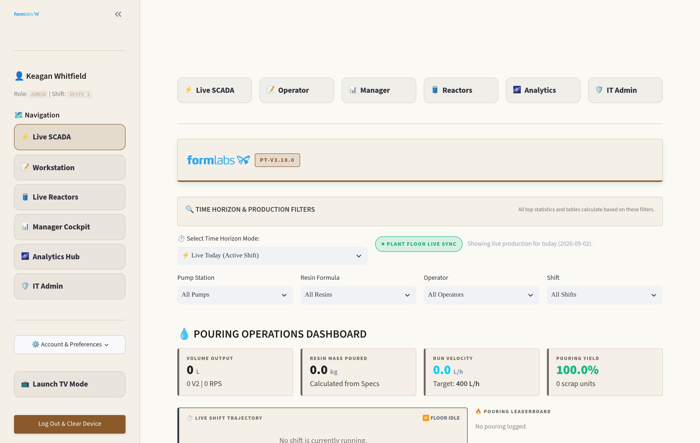
The same screen, light. Themes change presentation only — every figure,
filter and control is identical, so a handbook page describes one screen regardless of how the
reader has theirs set.
Resin Pouring Production Logging · Operations Handbook23
Appendix C / How it is tested
How it is tested
Before a release the system is exercised end to end against a
throwaway database built from nothing each time. It refuses to run against the production connection.
1,328assertions across seventeen suites — workflow, interface, roles, colour, fill weight, shifts, vessel levels, vessel drawings, backups and the stopped record, machine readiness, the shift build, measured pours, export destinations and their round trip, links, boot paths
58checks driving a real browser through an operator’s shift, on a desktop and a phone
18screens rendered and checked for errors on every pass
What the simulation covers
All ten migrations are applied to an empty database and the result compared table by table against
the application's own model definitions. A manager then creates three work orders; operators clear per-station
checklists and pour — clean logs, a fast-path log, a mismatched cartridge, a cartridge pulled before
pouring, a log with no run behind it, and a gated RPS jug — alongside downtime. Every
figure the interface displays is then recomputed from the raw rows and compared against hand-figured
expectations: poured, scrap, yield, per-operator totals, run progress, flag rate and variance.
What that has caught
The run card was printing the lot the check was hiding. An operator could have read
the expected lot off the screen instead of the cartridge, which would have made the whole check
decorative. Found because the interface test asserts the lot appears nowhere on the page.
Plant settings could never be saved. The Admin Panel's save button passed a
dictionary to a function expecting fifteen positional arguments, so shift times, rate targets and yield
targets had never been changeable from the interface.
A content-delivery fetch could take the terminal down. An unguarded network call for a
decorative animation ran on every interaction; a floor PC that lost its internet would have hung the
terminal before a control rendered.
Eight pages failed on a theme change, and log cleanup crashed whenever a filter
matched fewer than ten records — both long-standing.
A setting that saved and was never read back. The number of shifts had a column, a
migration, an admin field and a working save path — and the function every screen reads settings
through never returned it, so all of them silently used the default. It happened to be the right
answer for this plant, which is why nobody noticed.
Every light theme rendered its stylesheet as visible text. Found in a browser
after the tests had passed: an indented style block appended after other content is treated as a code
listing and displayed rather than applied. The twenty-four older themes were never bitten because
theirs comes first.
Every vessel on the wall would have drawn the first vessel's colour. A
gradient is referenced by an identifier, four vessels share one page, and duplicate
identifiers all resolve to the first — so the second tank onwards would have shown the
right level in the wrong resin's colour, on a screen whose whole point is being recognised by
colour from a distance. Nothing would have looked broken.
Vessel levels only worked because work orders were switched on. The level looked
like a vessel feature and was not one: the work order was quietly supplying both the point the vessel
was last filled and the size of the containers coming out of it. With work orders off — which is
how the system is proposed to run — every vessel summed every log ever taken at its station,
emptied on the first day and stayed there, and counted a five-litre jug as one litre. Both answers were
already in the hourly log; the level is now taken from there, and a suite of its own asserts that a
vessel reads the same figure with work orders on and off.
Closed since the last issue
The page sweep renders every screen but did not submit forms, which is how the settings save stayed
broken. The interface suite now drives the real pouring form through submission — including the
two rules that matter most about the check weight, that it never blocks a log and is never pre-filled
— and a screenshot comparison catches a card that lost its border or a chart that came back
empty, neither of which raises an error.
Resin Pouring Production Logging · Operations Handbook24
Appendix D / Built, not in serviceNot in service
Experiments, not commitments
Two things exist in the codebase that are not in use and not decided on. They are described here so the capability is known, not because there is a plan
attached to either. Both were built to find out whether the approach works.
Pack-out logging
A packing role, a pack-out logging tab, and skid conversion using each
resin's units-per-skid figure. Poured and packed totals are counted separately, and the gap between
them reports as floor work-in-progress. A reconciliation flow books the variance between what was
poured for a lot and the final packed count as a single labelled system adjustment.
It is switched off. Turning it on is a single plant setting, but nobody has
decided whether pack-out should be logged this way, and the workflow has not been tested against how
the line actually runs.
Machine integration
A protocol-agnostic gateway for reading floor equipment directly, so counts
and weights would not have to be typed. Each machine is a row in a registry and the polling logic sits
behind one shared interface, with adapters written for Modbus TCP, Modbus RTU, OPC-UA, MQTT, Serial
ASCII and HTTP. Readings would write through the same logging path the operator screen uses, so analytics and
run tracking would need no changes. A registry screen for it is written — add a machine, point it at the pump station it sits on, map its raw tags — and is deliberately not linked from anywhere in the application, so it cannot be reached by an administrator who has not been told it is there.
None of it has been tested against real equipment. The adapters were written to cover whatever the scales or pump controllers turn out to speak; which of them is correct is unknown until someone connects one. Until then the screen stays unlinked rather than deleted, so nothing is lost if the plant ever wants it.
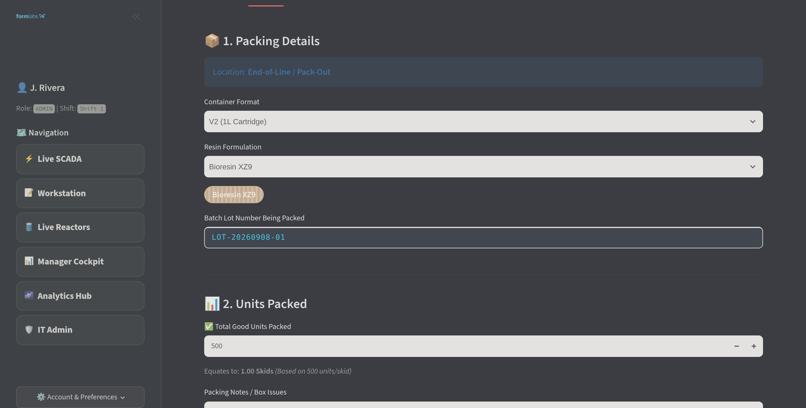
Pack-out logging, currently disabled. Container format, resin, lot and units packed,
with the skid equivalent calculated as the count is typed.
Read this as
Neither of these is a roadmap item or a commitment of dates. They are experiments that happen to be
finished enough to demonstrate, and either could be abandoned without affecting anything in service.
Resin Pouring Production Logging · Operations Handbook25